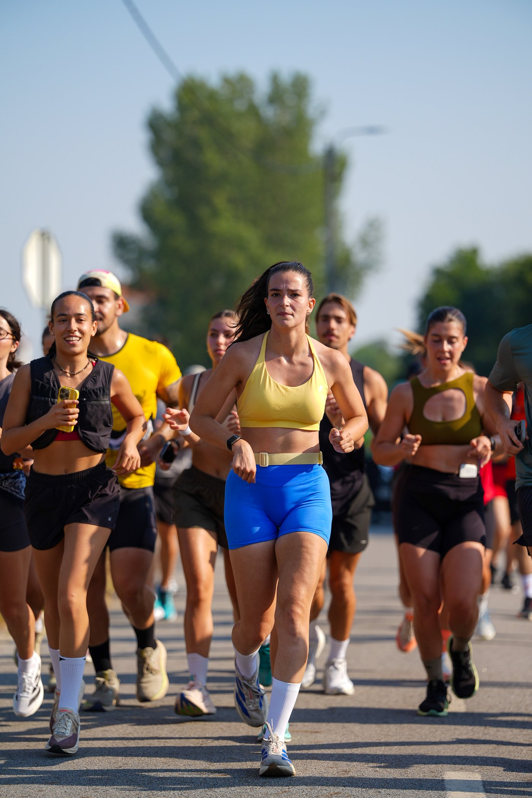
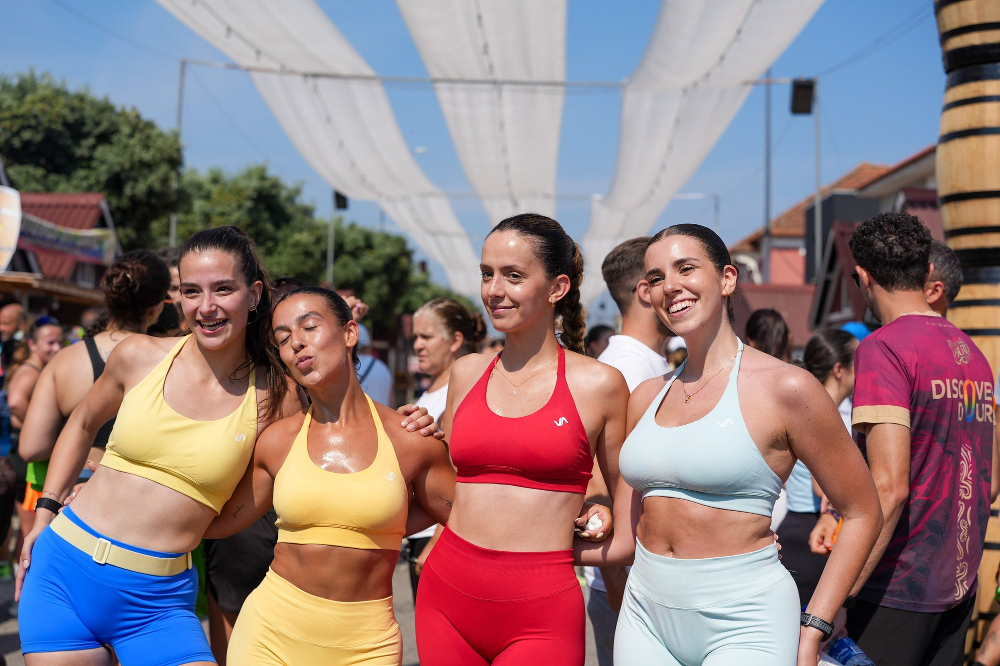

Esmoriz hosted the 25Km Pela Vida road race on 5 July 2026, drawing around 300 runners onto the streets of the coastal city, with event coverage by Luis Moreira for Image Media.

Esmoriz hosted the 25Km Pela Vida road race on Sunday 5 July 2026, drawing around 300 runners onto the streets of the coastal Aveiro district city. The field gathered in the city's Barrinha area, recognisable from the barrel-shaped signage and festival decorations that line the neighbourhood during Esmoriz's summer calendar, before setting out on the 25-kilometre course.

No official results or overall winners had been published for the race at the time of writing. The event's character leaned toward community participation rather than elite competition, with runners of varied paces moving together along the suburban roads outside the city centre before returning to the Barrinha area to celebrate.

Event coverage at 25Km Pela Vida was provided by Luis Moreira for Image Media.